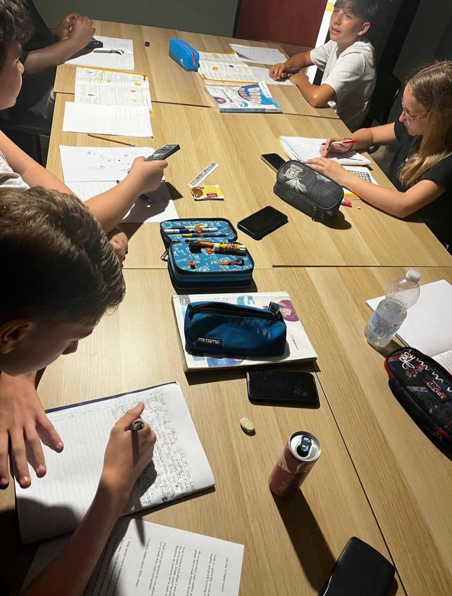

Una famiglia contribuisce
Le risorse condivise alimentano il fondo del progetto.
Un progetto di solidarietà per rendere il supporto allo studio più accessibile.
Con le Lezioni Circolari, le famiglie con maggiori disponibilità contribuiscono a un fondo comune che sostiene il percorso di chi incontra difficoltà economiche.
La partecipazione economica viene differenziata tenendo conto dell’ISEE. L’obiettivo è mettere in circolo le risorse e offrire a più studenti la possibilità di ricevere supporto.

Le risorse condivise alimentano il fondo del progetto.
Il contributo aiuta a rendere le lezioni più accessibili alle famiglie con minori disponibilità.
Il sostegno si traduce in un percorso di apprendimento costruito sulle esigenze dello studente.
Le Lezioni Circolari sono un progetto di Archimede. Per i voucher comunali, consulta invece Pescara Solidale 2026.
Scrivici per sapere come contribuire o richiedere supporto. La segreteria ti illustrerà disponibilità, condizioni e modalità di partecipazione.
Scrivici su WhatsApp Oppure via email ↗